Overview
Overview of mechanics and treatments.
Contents
Catastrophic Bleeding
External Wounds
Majority of injuries will create wounds that bleed, if bleeding is not stopped the blood loss may deteriorate to the point of loss of consciousness, shock, cardiac arrest and death.
Bandages
Pressure Bandage
Standard issue bandage meant for most wounds.
Emergency Trauma Dressing
Large surface bandage meant for covering many wounds at once, due to its size it takes longer to apply and cannot be used to self-bandage.
Elastic Wrap
Elastic Wraps are used to wrap already bandaged or clotted wounds to lower the chance of them falling off/wounds reopening, they cannot bandage bleeding wounds on their own.
Wraps can also be used to treat bruises, and to stabilize SAM Splints.
Clotting
Also see: Coagulation Mild bleeding wounds have a possibility of clotting on their own. Clots can be made more durable with TXA, most clots are unstable and are likely to reopen and should be wrapped or stitched when possible.
Internal Wounds
See: Internal Bleeding
Airway
Loss of reflexes
After going unconscious the airway will be partially or completely blocked due to the tongue falling back, preventing effective breathing.
Use of manual maneuvers or airway adjuncts is required to keep the airway open.
Airway Collapse
After being unconscious for a prolonged time the patient will lose reflexes to their upper airway, causing it to collapse and ultimately prevent any breathing.
Airway collapse can be mitigated by manual maneuvers, or managed with an i-gel.
Airway Obstruction
After being unconscious for a prolonged time, the patient will lose reflexes to the muscles keeping the stomach contents from the esophagus, which can cause regurgitation and aspiration.
Additionally any open wounds close to the airway may seep blood into the airway, blocking it.
Airway obstruction is caused by vomit (regurgitation) and blood seeping into the airway.
Airway obstructions can be cleared via manual maneuvers if not severe, otherwise medical suction must be performed.
Airway Obstruction (Vomit)
After staying unconscious for a while the patient may vomit, obstructing the airway.
Each patient will vomit a set amount of times, depending on stomach contents.
Airway Obstruction (Blood)
After going unconscious the airway will almost immediately become susceptible to blood seeping into the airway.
Make sure all wounds on the head are not bleeding to prevent any complications.
Airway Inflammation
Also see: CBRN When exposed to corrosive chemicals the airway may become inflamed, narrowing the opening and impacting breathing ability.
Severe inflammation may block the airway entirely causing respiratory arrest and preventing insertion of certain airway adjuncts.
Significant airway inflammation requires a surgical airway to allow breathing.
Airway Spasm
Also see: CBRN When exposed to nerve agents that cause seizure activity the airway may also be impacted.
An active airway spasm will cause respiratory arrest, potentially making mechanical ventilation ineffective.
Airway spasm managment includes administration of nerve agent antidote and anticonvulsant medication, a surgical airway may also be necessary.
Airway Management
Manual Maneuvers
Head Turning
- Clears slight obstructions
Head-Tilt Chin-Lift
- Keeps airway open
- Manages airway collapse
- Active action
Recovery Position
- Keeps airway open
- Manages airway collapse
- Drains slight obstructions and prevents any future obstructions
- Prevents many medical actions (without cancelling)
Airway Adjuncts
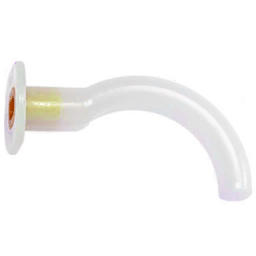
OPA- Keeps airway open
- Requires airway to be clear of obstructions
- Consumable
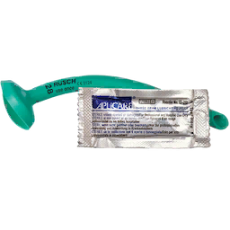
NPA- Keeps airway open
- Requires airway to be clear of obstructions
- Consumable
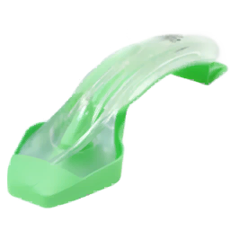
i-gel- Keeps airway open
- Manages airway collapse and prevents vomit related obstructions
- Requires airway to be clear of obstructions
- Consumable
Advanced Airway
- Keeps airway open
- Prevents airway compromise from collapse, obstruction, inflammation, or airway spasm
- Most invasive
- Requires consumable
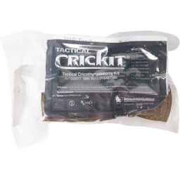
CricKit
Devices
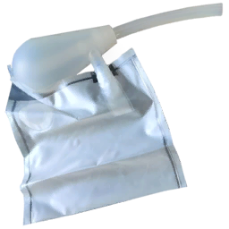
Emergency Disposable Suction Bag- Clears all airway obstructions
- Consumable
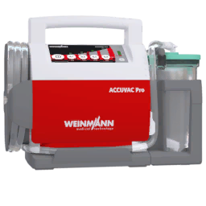
ACCUVAC- Clears all airway obstructions
- Bulky
Breathing
Every unit has an oxygen saturation value, it will drop if the person is not breathing or if they have other airway/breathing issues, if the saturation drops too low they will die.
<80 - unconsciousness
<67 - cardiac arrest
<55 - death
Oxygen deprivation can be visibly identified in patients as cyanosis, it is visible on the head and arms.
Oxygen saturation can be measured by a pulse oximeter, either standalone or as part of the AED.
Pulse Oximeters display a SpO2 reading, which is affected by blood volume, and will become less reliable the lower it is.
Checking Breathing
Diagnose action usable on unconscious patients to determine breathing state.
Hint Response
- “Patient is not breathing” - Cause: Airway is blocked/collapsed, patient is in respiratory/cardiac arrest
- “Patient breathing is shallow” - Cause: Chest injury, unmitigated mild airway collapse
- “Patient breathing is slow/rapid” - Cause: Respiratory rate outside of normal range (<16 or >22)
- “Patient is breathing normally” - Cause: Respiratory rate is within normal range
Stethoscope Auscultation
Active diagnose action used to listen to patient lung and heart sounds.
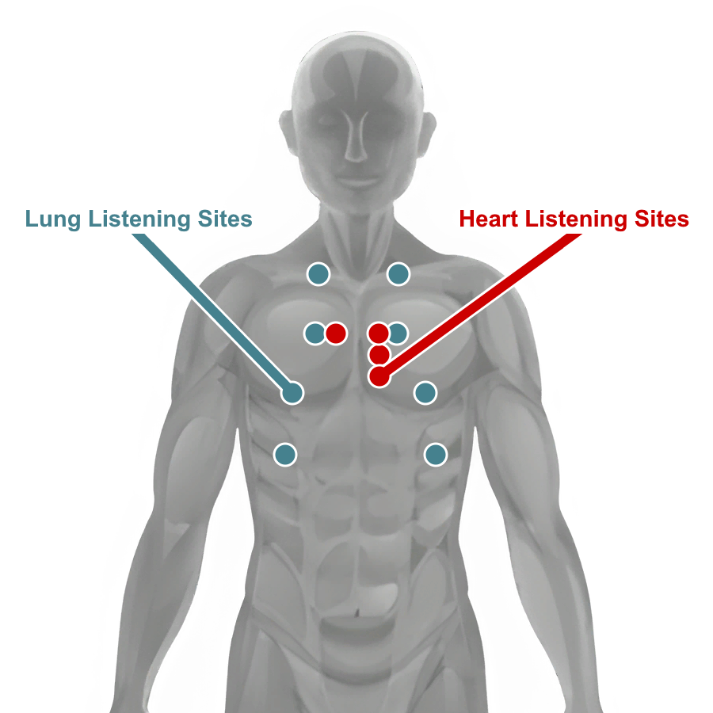
May be used to identify developing pneumothorax, tension pneumothorax and hemothorax, or to listen and measure respiratory rate or heart rate.
Pneumothorax may be identified by muffled breathing on one side of the chest, more severe chest injuries will be more noticable
Pneumothorax
Severe penetrating injuries to the chest may allow air to rush into the pleural space, over time as more air gets in it makes breathing difficult.
An untreated pneumothorax will deteriorate into a tension pneumothorax and will require further treatment.
Pneumothorax will deteriorate over time as long as the person is breathing.
Tension Pneumothorax
An untreated pneumothorax will eventually deteriorate into a tension pneumothorax, where the tension built from the outside air is preventing the lung(s) from inflating at all.
Hemothorax
Some penetrating injuries may also damage large blood vessels which can bleed into the pleural space. If not treated the Hemothorax will deteriorate into a Tension Hemothorax and prevent the lung(s) from inflating. A severe Hemothorax may be visible as bruising on the skin.
Chest Injury Diagnosis/Management
Pneumothorax can be caused by Velocity wounds, Puncture wounds, and Avulsions, depending on the severity of the injury a pneumothorax is more likely.
- Pneumothorax deterioration can be stopped with the application of a Chest Seal.
- A Tension Pneumothorax will require Needle-Chest-Decompression in addition to the application of a Chest Seal.
- Tension Pneumothorax can also be treated with a Thoracostomy.
- Actively bleeding Hemothorax needs to be managed with administration of TXA, then the blood may be drained via Thoracostomy (Chest Tube)
(Finger) Thoracostomy
Finger Thoracostomy is a surgical procedure in which an incision is made, expanded, and then a gloved finger is poked through the incision to feel for abnormalities in the pleural space (collapsed lung/blood).
- If no blood is present the incision can be immediately closed.
- If there is blood or active bleeding, TXA should be administered
- After bleeding is stopped a Chest Tube can be inserted to drain the blood.
- After draining the blood and confirming there’s no more bleeding the incision can be closed.
Inspect Chest
The Inspect Chest action is done by laying the patient flat on their back and looking past their chest from the level of the patient’s head, allowing chest rise and fall, and the even-ness of the chest to be noticeable.
It allows pneumothorax to be visibly identified as long as the airways are clear.
- Chest rise and fall observed - patient is breathing
- No chest movement - patient is not breathing
- Chest sides uneven - indicates some kind of pneumothorax
- Slight/Severe Tracheal Deviation - indicates a tension pneumothorax
Circulation
Medication Administration
Medications come in ready-use autoinjectors or single-use vials.
Vial medication must be drawn into a syringe before administration.
Medication effect is affected by patient weight, certain patients may require a higher dose than others, doses outside of the dose range may not increase the therapeutic effect but will have worse side effects.
Patient weight is consistent in multiplayer per player and random on AI.
Syringes
- 1ml IV/IM Syringe
- 3ml IV/IM Syringe
- 5ml IV/IM Syringe
- 10ml IV/IM Syringe
Liquid Medication
| Medication | Use | Access | Contents | Concentration | Dose Range | Onset | Peak | Duration | HR | BP | RR | Pain Relief |
|---|---|---|---|---|---|---|---|---|---|---|---|---|
| Epinephrine | Cardiac Arrest | IV/IM | 1mg/1ml | 1mg/ml | 1mg | <5s/<30s | ~4m | ~6m/~7m | ++ | ++ | ++ | |
| Morphine | Managing severe pain | IV/IM | 10mg/2ml | 5mg/ml | (IV) 0.05-0.1mg/kg or 3.75-10mg (IM) 0.07-0.1mg/kg or 4.25-10mg |
<25s/<2m | ~15m/~20m | ~21m/~30m | -- | -- | -- | STRONG |
| Fentanyl | Managing severe pain | IV/IM | 100mcg/2ml | 50mcg/ml | (IV) 0.5-1mcg/kg or 38-100mcg (IM) 0.7-1mcg/kg or 52-100mcg |
<10s/<30s | ~14m/~15m | ~16m/~20m | -- | -- | -- | VERY STRONG |
| Ketamine | Managing severe pain with compromised breathing ability | IV/IM | 500mg/10ml | 50mg/ml | (IV) 0.1-0.2mg/kg or 7.5-21mg (IM) 0.4-0.8mg/kg or 30-84mg |
<5s/<20s | ~9m/~10m | ~11m/~15m | STRONG | |||
| Amiodarone | Treatment of shockable cardiac arrest (VT/VF) | IV | 150mg/3ml | 50mg/ml | 300mg, up to 2200mg | <10s | ~8m | ~12m | -- | -- | ||
| Lidocaine | (IV) Treatment of shockable cardiac arrest (VT/VF) (IM) In advance of painful procedures |
IV/IM | 100mg/5ml | 20mg/ml | (IV) 1mg/kg, up to 3mg/kg (IM) 50-100mg |
<5s/<10s | ~6m/~4m | ~10m/~10m | (IV) -- | (IV) -- | ||
| TXA | Managing severe internal or external bleeding | IV | 1g/10ml | 100mg/ml | 1-2g | <15s | ~10m | ~15m | - | |||
| Ondansetron | Managing nausea from medications, vomiting | IV/IM | 4mg/2ml | 2mg/ml | 4mg, up to 8mg | <15s/<45s | ~10m/~12m | ~12m/~15m | - | |||
| Calcium Chloride | Managing low calcium after blood transfusion | IV | 1g/10ml | 100mg/ml | 1g after first unit, then 1g after every 4 units of blood | <15s | ~5m | ~10m | ||||
| Esmolol | Lowering heart rate for a short time | IV | 100mg/10ml | 10mg/ml | 0.25-0.5mg/kg | <20s | ~4m | ~5m | -- | |||
| Ertapenem | Managing wound infection, requirement for evacuation | IV/IM | 1g/3.2ml | 312.5mg/ml | 1g | <5s/<30s | ~10m/~15m | ~15m/~20m | ||||
| Adenosine | IV | 12mg/4ml | 3mg/ml | 6mg | <1m | ~25s | <2m | -- | ||||
| Atropine | Treating nerve agent exposure, increasing heart rate | IV/IM | 1mg/1ml | 1mg/ml | (Nerve Agent Exposure) 2-4mg initial, more if required (Bradycardia) >1mg |
<5s/<15s | ~10m | ~15m | ++ | + |
Other
| Medication | Use | Access | Uses | Recommended Dose | Onset | Peak | Duration | HR | BP | RR | Pain Relief |
|---|---|---|---|---|---|---|---|---|---|---|---|
| Morphine Autoinjector | Managing moderate to severe pain | IM | 1x | 1 injection (5mg IM equivalent) | <2m | ~20m | ~30m | -- | -- | -- | STRONG |
| Fentanyl Lozenge (OTFC) | Managing severe pain | BUC | 1x | 1 lozenge | <2m | ~10m | ~15m | - | - | -- | VERY STRONG |
| Penthrox Inhaler | Managing moderate to severe pain for a short time | INH | 8x | 1-5 uses | <3s | <90s | ~4m | - | MODERATE | ||
| Paracetamol | Managing mild to moderate pain | PO | 10x | 1-2 pills | <4m | ~15m | ~50m | WEAK | |||
| Naloxone Spray | Reversing opioid overdose | IN | 1x | 1-2 uses | <3s | ~2m | ~6m | ||||
| Ammonia Inhalant | Waking up patients | IN | 8x | <3s | <6s | <40s | + | ++ | |||
| Epinephrine Autoinjector (EpiPen) | IM | 1x | <30s | ~4m | ~7m | + | + | + | |||
| ATNA Autoinjector | Treating nerve agent exposure | IM | 1x | 2-3 injections initial | <15s | ~10m | ~15m | ++ | + | ||
| Midazolam Autoinjector | Managing seizure activity caused by nerve agent exposure | IM | 1x | 1 injection | <30s | ~15m | ~20m | - | - |
Blood Volume
Lost blood volume can be replaced with fluids.
Effective Blood Volume = Blood volume capable of carrying oxygen
Fresh Whole Blood
- Immediately replaces Effective Blood Volume
- Fast flow rate
- Replenishes platelets (with Calcium)
- Must be transfused from donor in the field
Whole Blood
- Immediately replaces Effective Blood Volume
- Slow flow rate
- Replenishes platelets (with Calcium)
Plasma
- 30% effective as Effective Blood Volume
- Moderate flow rate
- Replenishes platelets
Saline
- Does not replace Effective Blood Volume by itself
- Fast flow rate
Fluid Transfusion
The Transfusion Menu allows connecting new fluid bags and managing pre-existing ones.
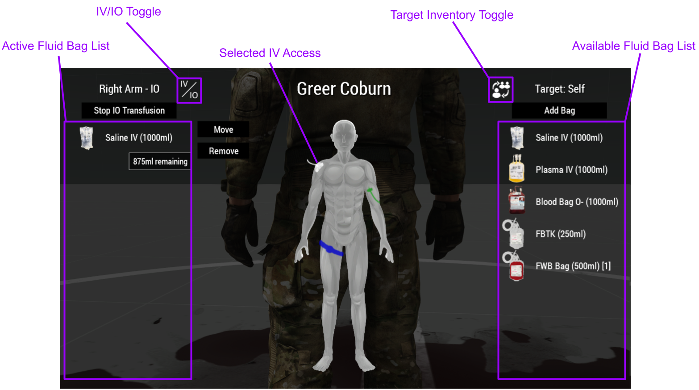
Available Fluid Bag List
- Lists available fluid bags in the target inventory
- Use the Target Inventory Toggle to switch between medic, patient and vehicle inventory
Active Fluid Bag List
- Lists connected fluid bags on the selected IV or IO
- Selected IV Access is shown on the character
- IV/IO transfusion can be stopped or continued for all fluid bags on the IV line
- Each connected fluid bag can be selected and can then be moved or removed
- Bags can be moved from one IV/IO line, and then placed on another without losing their contents
- Removed fluid bags will be returned to the medic’s inventory if fluid remains
- IV/IO Toggle will switch between available IV or IO access if there are multiple on the selected body part
Blood Transfusion
Whole Blood and Fresh Whole Blood bags are an invaluable resource for severe trauma patients.
- Whole Blood Bags - Accessible in arsenal or in resupply boxes
- Fresh Whole Blood Bags - Acquired from donor after use of a Field Blood Transfusion Kit
Field Blood Transfusion
Fresh Whole Blood is whole blood freshly donated from another unit, FWB will flow faster and more effectively replenish oxygen in the recipient’s blood compared to Whole Blood.
Fresh whole blood bags will lose their benefits the longer they are kept out, so it is advisable to use them soon after transfusing, if kept out for a prolonged time they will be as effective as Whole Blood bags.
To perform a field blood transfusion a Field Blood Transfusion Kit should be connected to the donor like a regular fluid bag, it must be connected to an IV.
When connected the Field Blood Transfusion Kit will fill up to its designated volume.
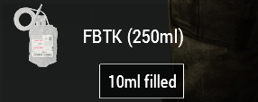
Once the Field Blood Transfusion Kit is full it can be disconnected and used as a Fresh Whole Blood Bag.
Blood Types
Incompatible blood type transfusions will cause an immune system response, potentially killing the recipient.
The blood type can be checked on the patient’s dog tag.
| Recipient | Donor | |||||||
|---|---|---|---|---|---|---|---|---|
| O- | O+ | A- | A+ | B- | B+ | AB- | AB+ | |
| O- |  |
|||||||
| O+ | |
|
||||||
| A- | |
|
||||||
| A+ | |
|
|
|
||||
| B- | |
|
||||||
| B+ | |
|
|
|
||||
| AB- | |
|
|
|
||||
| AB+ | |
|
|
|
|
|
|
|
Low Calcium
All blood transfusions can cause low calcium levels in the blood, eventually causing coagulopathy.
This is managed with Calcium Chloride administration, 1 gram of Calcium Chloride should be given after the first unit (500ml) of blood, then 1 gram after every 4 units.
Internal Bleeding
Penetrating injuries not only cause damage on the “outside” but also damage the inside of the body, after external bleeding is managed internal blood vessels may still be bleeding.
Internal bleeding can be managed with fluid administration and TXA.
Severe Internal bleeding will present as bruises on the skin, additionally the patient’s blood pressure will drop.
Coagulation
As a person bleeds the body tries to stem the bleeding by clotting, using platelets.
Small and medium wounds have a chance to clot on their own, large wounds will require bandaging.
Platelets are used up as long as the person is bleeding and will slow the loss of blood.
When out of platelets coagulation will fail, bleeding rate will increase and wounds will no longer clot.
Coagulation will also stem and clot internal bleeds.
Platelet count is replenished on its own and by fluid administration.
Coagulation is enhanced with administration of TXA, for both internal and external wounds.
IV Access
IV access allows administration of IV medication and fluids.
IV lines are affected by tourniquets and limb damage.
IVs are preferable due to the fast flow rate, but in case of severe injury and no immediately available IV locations IOs should be used instead.
16g IV
- Placed on the limbs
- Moderate flow rate
- Chance of complications
14g IV
- Placed on the limbs
- Fast flow rate
- High chance of complications
FAST1 IO
- Placed on the chest (sternum)
- Fast insertion time
- Slow flow rate
EZ-IO
- Placed on limbs (tibia/humerus)
- Fast insertion time
- Slow flow rate
IV Complications
IVs inserted into damaged body parts have a chance to cause complications, chance depends on IV size and body part damage.
- Transfusion Pain - pain caused on insertion and during transfusion
- Slow Flow Rate - affected IV will have its flow rate impacted
- Leakage - affected IV will lose fluid
Inspect IV
IV catheters can be inspected for complications or to see if the IV is busy.
- “IV Catheter is clear” - IV has no fluid bags connected
- “IV Catheter has normal flow” - fluids are flowing on IV
- “IV Catheter has no flow” - flow is stopped on IV
- “Swelling on insertion site” - fluid is leaking from IV
Cardiac Arrest
Cardiac Arrest means the heart isn’t actively pumping blood, stopping oxygen from traveling from the lungs to the brain, causing brain damage and eventual death.
Cardiac Arrest should be confirmed by a manual pulse check, when confirmed an AED should be connected or CPR should begin immediately until an AED is available.
The AED allows displaying of cardiac rhythms when the pads are connected, the electrical signals from the heart will be interpreted and the Electrocardiogram (EKG) will be displayed on the monitor as a waveform.
Cardiac Arrest Rhythms
Shockable
- Ventricular Tachycardia
- Ventricular Fibrillation
Non-Shockable
- Pulseless Electrical Activity (PEA)
- Asystole
Rhythm EKG
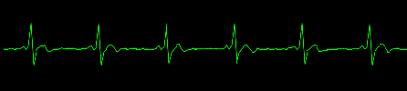
Sinus
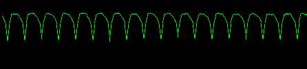
Pulseless Ventricular Tachycardia
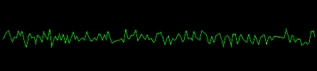
Ventricular Fibrillation
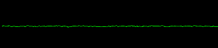
Asystole
Shockable rhythms are disorganized rhythms that should be stopped (defibrillated) to get the heart to a sinus rhythm again.
Non-shockable rhythms will not react to defibrillation and should not be shocked.
Reversible Cardiac Arrest
PEA is an unique non-shockable rhythm that looks like a sinus rhythm when viewed on the EKG.
PEA signifies that the electrical signals are in order but another cause is preventing the heart from beating normally.
Reversible causes:
- Hypovolemia
- Hypoxia
- Tension Pneumothorax
- Hemothorax
The cause should be reversed first if possible, and CPR started immediately after.
Cardiac Arrest Treatment
An AED is preferable as it can quickly diagnose the rhythm and increase chances of Return Of Spontaneous Circulation.
If no AED is available CPR should be performed as soon as possible.
The AED can be used in AED mode in which it will automatically analyze and shock as required, with audio prompts to signal when to start CPR.
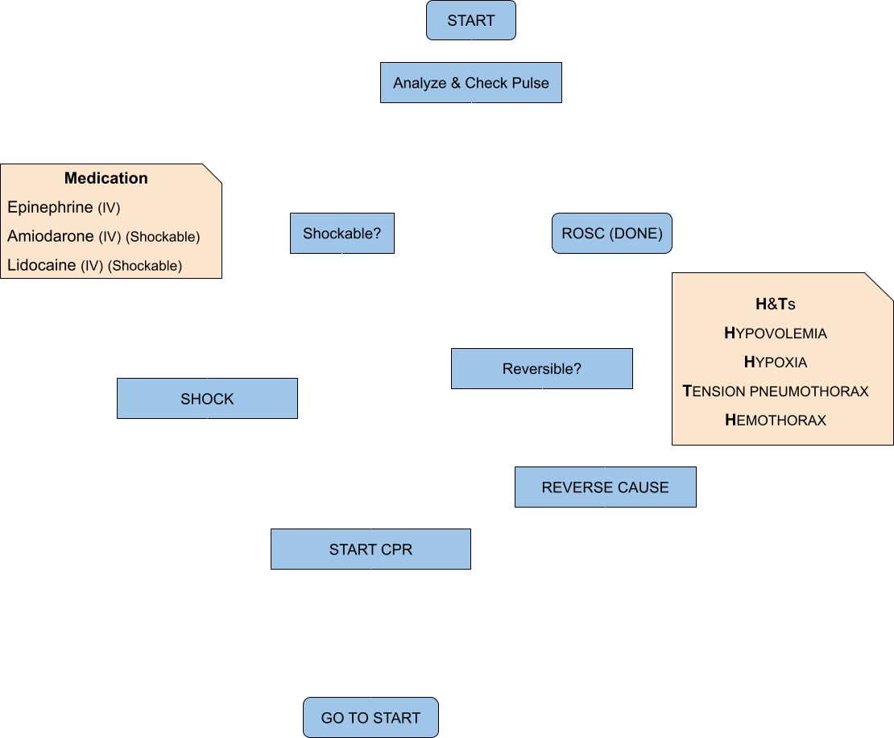
ROSC chance is based on CPR consistency, medication, recent shocks, patient blood volume and the medic’s traits.
Disability
Fracture Management
Fractures are caused by velocity and crush wounds on the limbs, fractured legs will cause limping and fractured arms will increase weapon sway.
Check For Fracture
Diagnose action usable on injured limbs of patients to determine injury severity and if it is fractured.
- “Patient has no substantial damage on limb” - Limb is undamaged
- “Patient limb is bruised” - Limb is bruised
- “Patient has severe bruising on limb” - Limb has mild fracture
- “Patient has swelling on limb” - Limb has severe fracture
- “Patient has significant swelling on limb” - Limb has complex fracture
- “Patient has splint applied to limb” - Limb has splint already applied
- “Fracture realignment performed” - Fracture realignment was already performed on limb
Management
Fracture realignment can be performed on damaged limbs that are suspected to be fractured, consider IM lidocaine to prevent pain.
- Applying a splint after fracture realignment will allow the casualty to sprint
- Applying a splint without realignment will only allow the casualty to jog.
Depending on fracture severity the fracture may deteriorate from further damage or over time, complex fractures cannot be managed in field and will require evacuation to fully treat.
CBRN
(Chemical, Biological, Radiological, and Nuclear)
Chemical Agents
Chemical Weapon Agents (CWA) are chemicals with toxic properties designed to incapacitate, injure and kill.
CS Gas
CS Gas is a tear agent, it is deployed as a faint grey gas from CS Grenades, 40mm CS Grenade Shells or mortar rounds.
It is absorbed by inhalation, and eyes.
Effects
- Immediate: Coughing, pain
- Moderate: Blindness
- Prolonged: Difficulty breathing
All effects can be prevented with the use of a gas mask.
Exposure Management
- Pain caused by exposure can be managed by most painkillers
- Blindness caused by exposure can be managed by washing the patient’s eyes with water
Chlorine Gas
Chlorine Gas is a pulmonary agent, it is deployed as a bright yellow gas from mortar rounds, it may also be released from chemical IEDs.
It is absorbed by inhalation and the skin.
Effects
- Immediate: Coughing, pain, choking
- Moderate: Airway inflammation, blindness
- Prolonged: Unconsciousness, respiratory arrest, death
Inhalation can be prevented with the use of a gas mask.
Skin exposure can be prevented with the use of a CBRN suit.
Exposure Management
- Pain caused by exposure can be managed by most painkillers
- Blindness caused by mild exposure can be managed by washing the patient’s eyes with water
- Severe airway inflammation requires a surgical airway to re-establish airway access
Sarin Gas
Sarin Gas is a nerve agent, it is deployed as a colorless gas from mortar rounds, it may also be released from chemical IEDs.
It is absorbed by inhalation and the skin.
Effects
- Immediate: Coughing, pain
- Moderate: Muscle spasms
- Prolonged: Unconsciousness, airway spasm, respiratory arrest, death
Inhalation can be prevented with the use of a gas mask.
Skin exposure can be prevented with the use of a CBRN suit.
Exposure Management
- Effects can be mitigated with Atropine administration, or ATNA Autoinjectors
- Seizures are managed with anticonvulsant medication
- Airway spasms require a surgical airway to rapidly re-establish airway access
Lewisite
Lewisite is a blister agent, it is deployed as a colorless gas from mortar rounds, it may also be released from chemical IEDs.
Effects
- Immediate: Coughing, pain, chemical burns
- Moderate: Blindness
- Prolonged: Unconsciousness, airway inflammation, respiratory arrest, shock, death
Inhalation can be prevented with the use of a gas mask.
Skin exposure can be prevented with the use of a CBRN suit.
Exposure Management
- Shock caused by lewisite will require fluid administration
- Severe airway inflammation requires a surgical airway to re-establish airway access
Protection
Personal Protective Equipment (PPE) includes gas masks and CBRN suits.
By default all vanilla arma gas masks and CBRN suits are defined as such, custom ones will need to be added in the settings.
Gas masks come with filters, the filters get used up if exposed to a hazard agent, they may be replaced at will.
Additionally vehicles may be defined as sealed or overpressured in the settings.
- Overpressured vehicles (designated CBRN vehicles, or sometimes IFVs and tanks), are vehicles that have the capability to cause overpressure in the cabin, preventing any hazardous agents from getting inside
- Sealed vehicles (certain MRAPs, APCs, IFVs, tanks), are vehicles that are sealed and don’t let hazardous agents inside, but if the crew opens any doors, is turned out or leaves the vehicle they are no longer protected and the cabin itself may become contaminated
- Unprotected vehicles (open-top, bikes, civilian vehicles), have no protection and its occupants will be exposed to hazardous agents without proper PPE
Evacuation
The Evacuation addon allows reinforcement of player casualties, lowering the time infantry players spend unconscious without impacting medical gameplay.
This system requires some setup on the mission side as well as settings.
Use
During a mission players (with appropriate medic traits) are able to convert player casualties into AI ones, teleporting the casualty player back to the set reinforcement area, from there those players should seek transport to be fully reinserted.
The casualty is still left to be treated in-field and eventually evacuated, if this casualty dies they will count towards player deaths and use a respawn ticket.
Casualty Conversion
To be able to convert a player casualty these requirements need to be met:
- Casualty must be unconscious
- Casualty must be alive
- Casualty must not be bleeding externally
- Casualty must be in a medical facility/vehicle, if required
- The medic must have the correct medic trait, if required
- Casualty must have Ertapenem administered, if required
- There must be available casualty tickets remaining
If met, the medic can perform the conversion, after completion this action will use a casualty ticket.
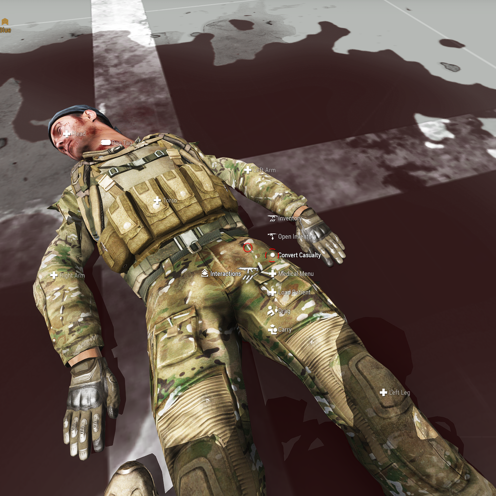
Casualty Evacuation
Carried casualties can be evacuated on the defined interaction object, this will return the claimed casualty ticket.
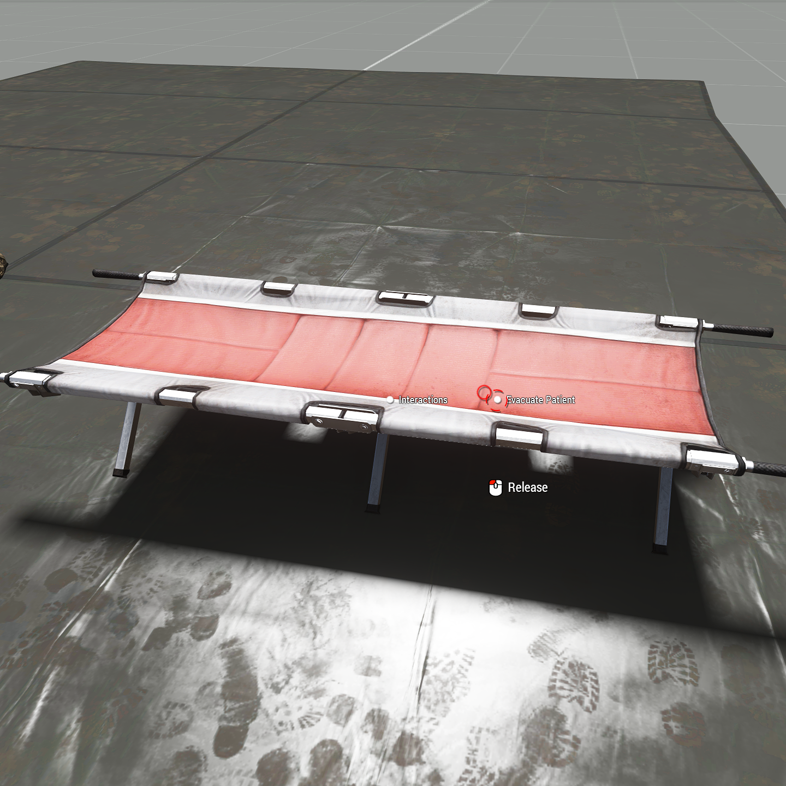
Treatment Reference
Catastrophic Bleeding
- Tourniquet on limbs if too many wounds
- Use Pressure Bandages on self
- Use Emergency Trauma Dressing on body part with many wounds
- Follow up with Elastic Wrap and wrap bandaged or clotted wounds after patient stable
Airway
Check Airway:
- Obstruction:
- Mild Obstruction -> Head turning, or suction
- Severe Obstruction -> Suction required
- Collapse:
- None-mild -> Use NPA/OPA, Head Tilt-Chin Lift, Recovery Position
- Mild-Severe -> i-gel, Head Tilt-Chin Lift, Recovery Position
Breathing
Diagnosis
Inspect Chest:
- Chest rise and fall -> No chest injury
- No chest rise and fall -> No chest injury, has airway obstruction or cardiac arrest
- Chest Uneven -> Chest Injury
- Tracheal Deviation -> Tension Pneumothorax
- Bruising on (upper) chest -> Hemothorax
Chest Auscultation: Listen for diminished or lack of breathing sounds on one side of the chest
Treatment
- Apply Chest Seal -> then re-asses
- Hemothorax suspected -> Thoracostomy and Chest Tube, administer TXA
- Tension Pneumothorax suspected -> Thoracostomy, or Needle Chest Decompression (NCD Kit)
- Thoracostomy:
- Lung is inflating normally -> Close incision
- Lung is not inflating/lung severely collapsed -> Close incision
- Blood in pleural space -> Chest Tube
- Bleeding in pleural space -> Chest Tube, administer TXA
- Chest Tube:
- Drain with ACCUVAC or Emergency Suction Bag
- Keep re-draining until no blood is drained
- When done close incision
Circulation
- Feel for carotid pulse (on head):
- No pulse -> Cardiac Arrest Management
- Feel for radial (arms) and femoral pulse (legs):
- Weak or no pulse -> Fluid Transfusion
- Check body parts for bruising
- Noticeable bruising -> Administer TXA
Cardiac Arrest Management
- Look for reversible causes:
- Tension Pneumothorax/Hemothorax -> re-asses Breathing
- Hypovolemia -> Fluid Resuscitation
- Hypoxia -> Begin CPR, consider BVM
- No reversible causes:
- Check for overdose -> Administer naloxone if opioid
- Connect AED -> AED
- No AED -> CPR
Fluid Resuscitation:
- Insert IO
- Push fluid (Fresh Whole Blood > Whole Blood > Plasma > Saline)
- Begin CPR
CPR:
- 2 minutes of CPR, then check for pulse, repeat
- For casualties with oxygen deprivation, also use BVM
- Single medic or no i-gel -> 30 compressions (~18s), followed by 2 BVM breaths
- 2 medics -> continuous CPR and BVM
- If there is no oxygen deprivation, perform continuous CPR
- For casualties with oxygen deprivation, also use BVM
AED:
Analyze rhythm manually or use AED Mode
- Manual: (See Cardiac Arrest)
- Sinus -> Re-asses
- VT/VF -> Administer amiodarone or lidocaine, shock, CPR
- PEA -> Re-asses reversible causes, CPR
- Asystole -> Check for terminal injures, CPR
- AED Mode:
- Wait for decision
- Shock -> Push Shock, CPR
- No Shock -> CPR
- CPR
- Perform CPR for 2 minutes (or until AED signals)
- For casualties with oxygen deprivation, also use BVM
- Single medic or no i-gel -> 30 compressions (~18s), followed by 2 BVM breaths
- 2 medics -> continuous CPR and BVM
- If there is no oxygen deprivation, perform continuous CPR
- For casualties with oxygen deprivation, also use BVM
- After 2 minutes re-analyze in AED Mode or manually, repeat
- Perform CPR for 2 minutes (or until AED signals)
ROSC:
Signs:
- Sudden elevated EtCO2 (40-50)
- Subsiding cyanosis
- Check for carotid pulse after ROSC to confirm
Fluid Transfusion
- Acquire IV access, if unable to find vein or body parts too damaged, use IO instead
- Connect fluid bags (Fresh Whole Blood > Whole Blood > Plasma > Saline)
- Re-asses, move fluid bags to IVs when available
Medication Administration
- Acquire IV access, if unable to find vein or body parts too damaged, use IO instead
- Noticeable bruising or severe bleeding -> TXA 1g
Disability
Fracture Management
Check For Fracture
- Mild -> Continue
- Severe -> Continue
- Complex -> Evacuate casualty to fully treat
Management
- Administer IM lidocaine in advance of realignment
- Perform fracture realignment
- Apply SAM Splint
- Check casualty mobility -> If still limited retry realignment and reapply splint
- Wrap SAM Splint
Pain Management
Pre-dosed
- Mild-Moderate
- Paracetamol (1-2 pills) -> Long onset, long effect time, mild pain suppression effect
- Penthrox -> Rapid onset, short effect time
- Moderate-Severe
- Morphine Autoinjector (No Chest Injury) -> Short onset, long effect time
Liquid Medication (See Medication Administration)
- If no breathing problems -> Morphine/Fentanyl
- Impaired breathing -> Ketamine
- Consider Ondansetron (4mg) after Ketamine